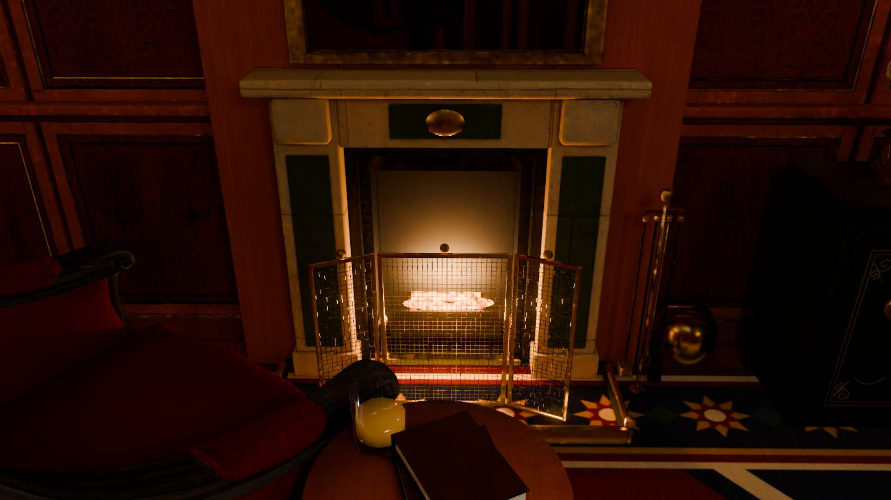
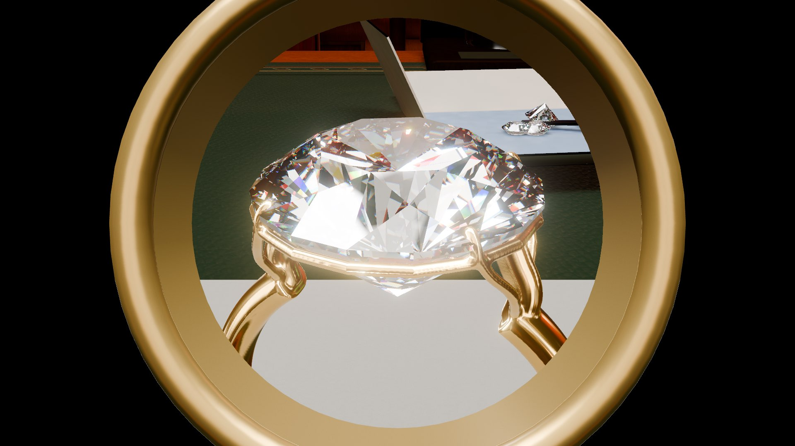

HEATHER HOLTZ · RENDERING STUDIES
A little world for looking closer.
An ornate private railcar, a jeweler’s bench, and experiments in how light travels through gemstones. These are real captures and offline renders from the project. This gallery needs no interactive graphics or JavaScript.
Inside the railcar





How it started

Faceted gemstones · Rust
Offline reflection and refraction studies.
Code and render settings ↗
Tiger’s eye · Rust
A surface model with a directional highlight.

Fiber depth · Mitsuba
A separate layered scattering study, with some remaining sampling noise.
Material setup ↗About the project
Heather directed the project and edited the Blender room. Codex and Claude helped with code, scene design, and testing. This AI-assisted portfolio project is separate from Heather’s manually authored class renderer.
The browser uses Three.js, baked room lighting, and room captures for reflections. The gemstone optics and refracted light use bounded approximations; this is an ongoing rendering study.
Asset credits
Photographed materials, furnishings, and trees: Poly Haven, CC0. Paintings: the Met’s public-domain Open Access collection. Globe imagery: NASA Blue Marble. The carpet, clock dial, ledger, labels, and damask were created for the project.
The offline gemstones adapt Jewel by Zsky under CC BY 3.0, with changes to materials, scale, and topology. Full adaptation credits · Texture credits · Three.js MIT license.